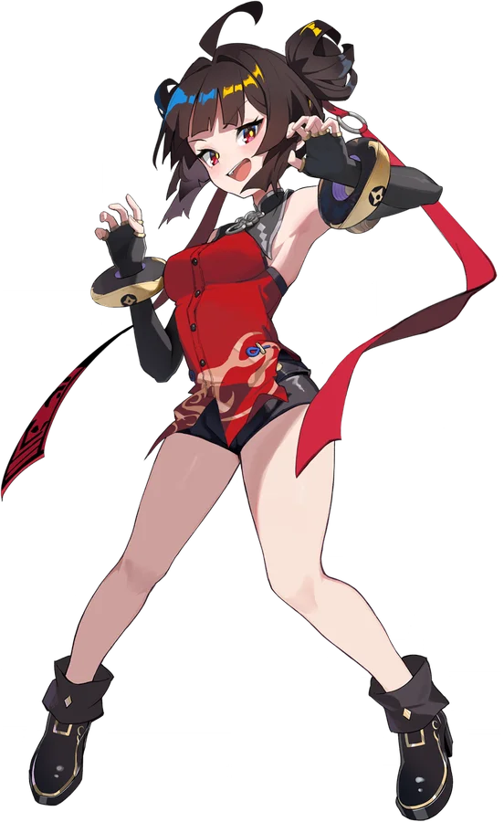
姬梦枫 · 旗袍娘
联合城最好吃饭店【隆兴饭店】的老板娘。其真实身份是【凰天会】的大当家，道上的人都称她为“公主”。和帕露南有密切的商业往来，恋的家主和青梅竹马，主星之一。
回复2点生命值。如果拥有养精蓄锐（攻击力+2，防御力+2），则本回合攻击力+3。
PVE回复2点生命值。如果拥有养精蓄锐（攻击力+2，防御力+2），则本回合攻击力+4。
本回合未挑战别人，则在回合结束时获得1层养精蓄锐（攻击力+2，防御力+2），最多拥有1层。自身挑战发起的战斗结束后，移除1层养精蓄锐（攻击力+2，防御力+2）。
使用主动技能时，姬梦朝获得1张符卡-福。
养精蓄锐（攻击力+2，防御力+2）可以最多储存至5层，放过怪物时，获得2层养精蓄锐（攻击力+2，防御力+2）。 攻击时，如果养精蓄锐（攻击力+2，防御力+2）为5层，则会额外消耗2层，对附近2格的怪物造成本次攻击伤害88%的伤害。
基础资料
PVE 特性
- 达到1星时防御力+1
- 达到2星时移动速度+1，攻击力+1
- 达到3星时攻击力+1、防御力+1、移动速度+1
默认
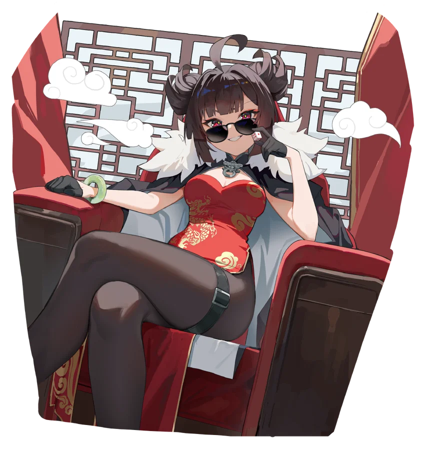
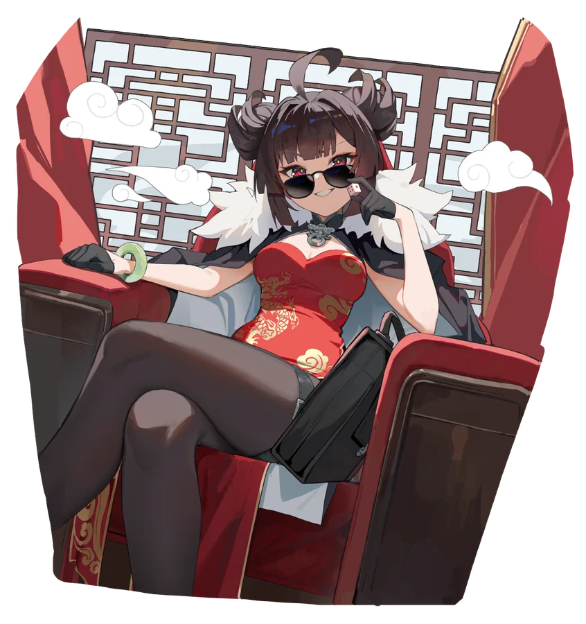
羁绊皮肤
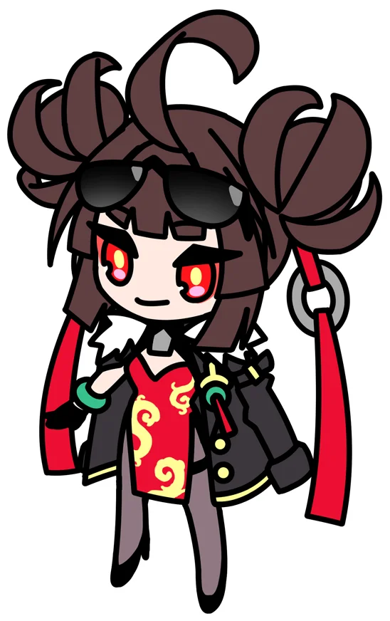
战斗女仆
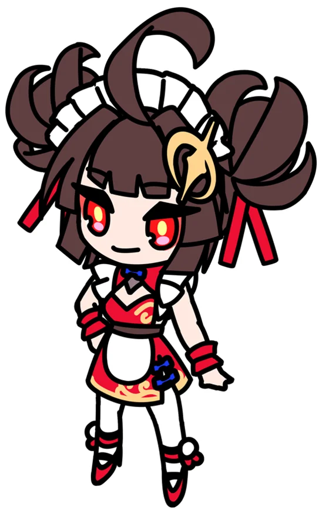
不要被这身奇怪的服装迷惑了，姬梦枫可不是看起来那么弱小的女子。 在姬梦枫家族的观念里，女孩子从不以柔弱示人。相反，“巾帼不让须眉”才是每个女孩更向往的追求。 姬梦枫从小就在家族的酒店里帮忙，从不因身份高低少干一点活。她还要跟着家里的师傅学习手艺，也从未因大小姐的身份放弃什么。姬梦枫就是这样的性格——你觉得她干不成的事，她偏要去试试，甚至完美地完成。 你说她穿着女仆装耍大刀，行不行？ 她可能真的会穿上女仆装，甚至在送菜时，为你表演一段刀舞。
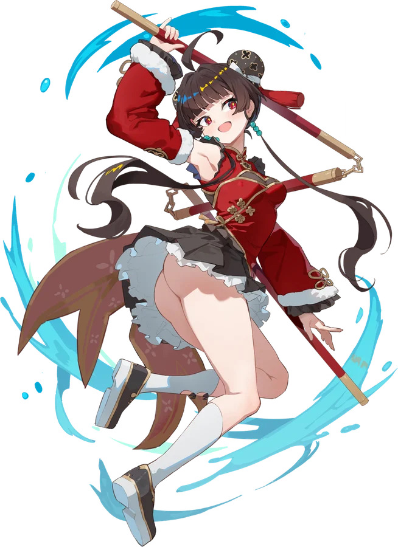
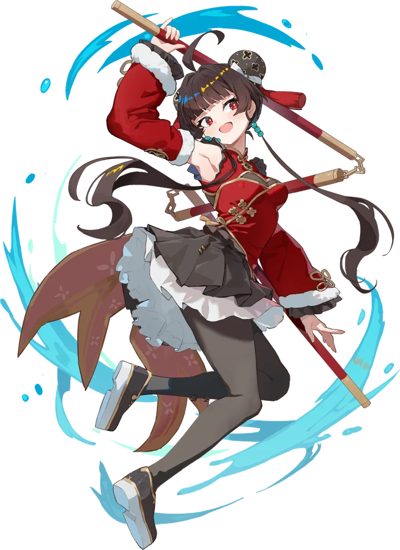
锦跃游龙
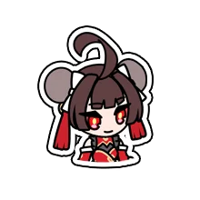
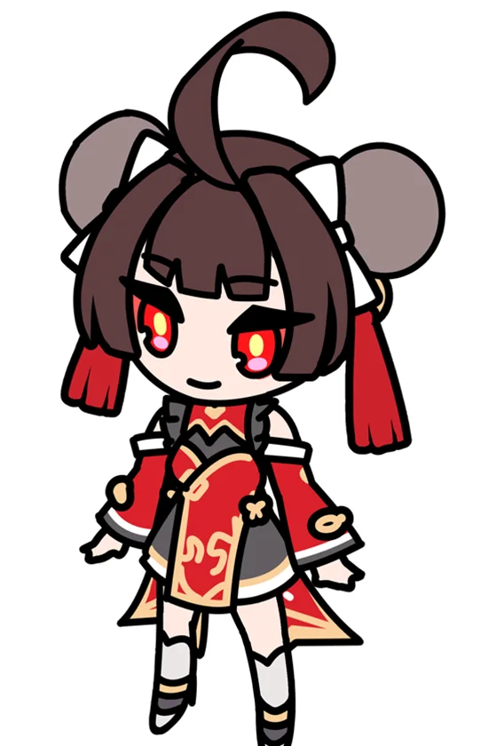
“这是什么东西？”娜蒂斯看着姬梦枫手上的“棍”不解地问道。 “三节棍，我们传统武术里的一把兵器。” “兼具柔韧与刚猛，爆发力极强的武器。”姬梦枫快速挥舞着在娜蒂斯面前。 “表演一段？”娜蒂斯突然来了兴趣。 “行啊，那你往后面稍稍。” 没过多久，娜蒂斯开的水上乐园请去了姬梦枫的杂技团做现场表演，甚至姬梦枫本人也参加了那场演出。那个园区的主题配合姬梦枫的鱼跃龙门，让现场的气氛炒到了最高点。成为了那段时间联合城津津乐道的话题。
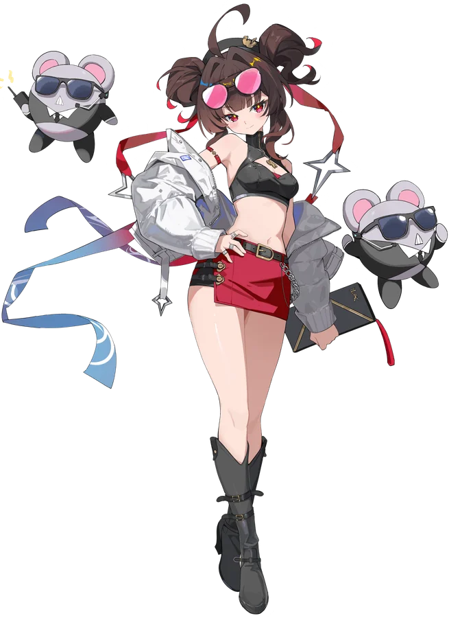
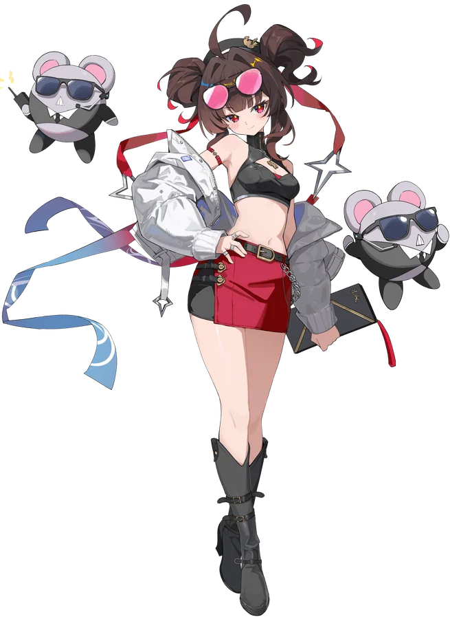
潮流公主
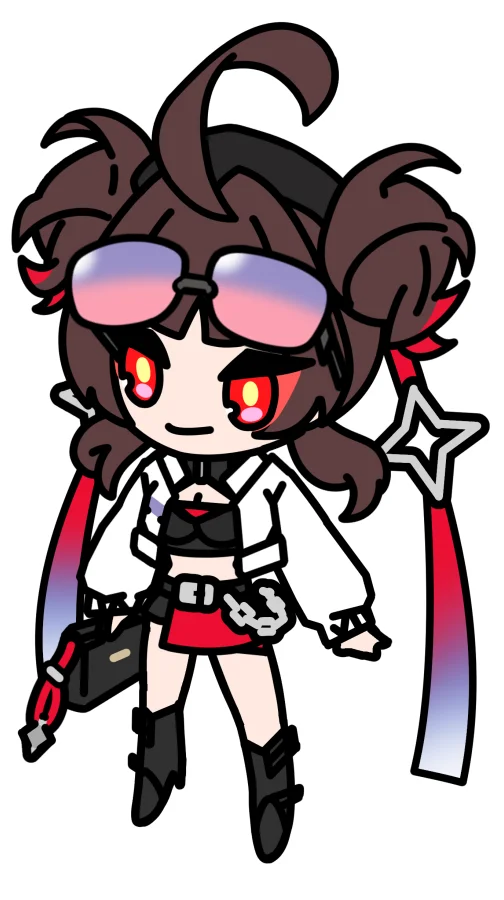
“怎么样？我给你挑的这身。”帕露南看着镜子里的姬梦枫问道。 “我是没什么感觉啊。”姬梦枫卷了卷自己的刘海。 “评价一下啊！”帕露南显然对她回答的反应不是很满意。 “唉，我真的对这方面没什么认知，你是这方面的专家。这是你公司的新品发布会，我只是来捧场的。”姬梦枫突然站了起来，看了看自己的裙摆，皱起了眉头。 “怎么了？”帕露南问道。 “呃，我怎么感觉你有一套和这差不多的衣服？” “哈！被你发现了。其实这次不光是叫你来捧场，还有一个别的事。”帕露南眯起眼睛，鬼祟地笑了笑。 “干嘛笑得这么猥琐？有什么事快说啊！” “要你和我一起拍宣传广告的封面！”帕露南坚定地盯着姬梦枫。 “可别这样！我又不是你这样的时尚达人，算了算了。”说着，姬梦枫就准备进更衣室换衣服。 “别啊！叫你妹妹都没理我！我想了半天，只有你了！！”帕露南发出了哀求的声音。 这老狐狸太狡猾了，怎么还装可怜起来了？ “我晚上还有别的应酬，快点吧，帕露南小姐。”姬梦枫拧不过她，叹气说道。 “包在我身上！”帕露南兴奋地拨通了手下的电话。
晨暑惊眠
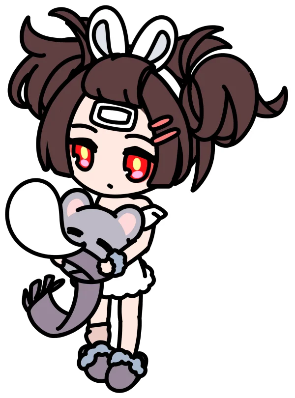
“快！快跑啊，妹妹！我来挡住她！”姬梦枫转头对姬梦朝大喊道。 “姐姐！”姬梦朝被几个同伴拉着，巨大的火焰生物屹立在桥的前方，挥舞着燃烧火焰的刀刃，准备向她们发起攻击，而作为姐姐的姬梦枫此时正挡在人群最前方，用尽全力抵挡这热浪袭人的怪物。 就在此时，姬梦枫对着怪物大喊道：“我绝对不会让你过去的！” 瞬间，大桥崩塌，姬梦枫和怪物掉了下去，最后，只看到妹妹的脸。 “啊啊啊啊啊啊！！！”姬梦枫突然一个激灵坐了起来，发现自己不知何时从床上滚到了旁边的懒人沙发上。 “啊……吓死我了……梦啊？不对，怎么这么热……空调遥控器呢……？”姬梦枫开始找这救命的遥控器。 “啊？不会吧？坏了？怎么吹的是热风？！”看着眼前显示制冷的空调吹出来的热风，姬梦枫赶快一边打电话叫人来修理，一边找来前几天吃完火锅还没用完的冰凉贴。 “再坚持一下，一个小时而已……”姬梦枫看了看手边的书，想了想现在的情况。 看样子，还要和这热浪怪物一起坠入深渊一会儿。
共 19 个表情，点击可放大。

官方 wiki 没有这角色的 /获取 页，头像、名片、卡牌、骰子的完整清单暂缺；下方「档案」里保留了画廊中的零散素材。
人物传记
在隆兴饭店可以偶尔看见她和妹妹在指导工作。
皮肤故事
战斗女仆
不要被这身奇怪的服装迷惑了，姬梦枫可不是看起来那么弱小的女子。 在姬梦枫家族的观念里，女孩子从不以柔弱示人。相反，“巾帼不让须眉”才是每个女孩更向往的追求。 姬梦枫从小就在家族的酒店里帮忙，从不因身份高低少干一点活。她还要跟着家里的师傅学习手艺，也从未因大小姐的身份放弃什么。姬梦枫就是这样的性格——你觉得她干不成的事，她偏要去试试，甚至完美地完成。 你说她穿着女仆装耍大刀，行不行？ 她可能真的会穿上女仆装，甚至在送菜时，为你表演一段刀舞。
锦跃游龙
“这是什么东西？”娜蒂斯看着姬梦枫手上的“棍”不解地问道。 “三节棍，我们传统武术里的一把兵器。” “兼具柔韧与刚猛，爆发力极强的武器。”姬梦枫快速挥舞着在娜蒂斯面前。 “表演一段？”娜蒂斯突然来了兴趣。 “行啊，那你往后面稍稍。” 没过多久，娜蒂斯开的水上乐园请去了姬梦枫的杂技团做现场表演，甚至姬梦枫本人也参加了那场演出。那个园区的主题配合姬梦枫的鱼跃龙门，让现场的气氛炒到了最高点。成为了那段时间联合城津津乐道的话题。
潮流公主
“怎么样？我给你挑的这身。”帕露南看着镜子里的姬梦枫问道。 “我是没什么感觉啊。”姬梦枫卷了卷自己的刘海。 “评价一下啊！”帕露南显然对她回答的反应不是很满意。 “唉，我真的对这方面没什么认知，你是这方面的专家。这是你公司的新品发布会，我只是来捧场的。”姬梦枫突然站了起来，看了看自己的裙摆，皱起了眉头。 “怎么了？”帕露南问道。 “呃，我怎么感觉你有一套和这差不多的衣服？” “哈！被你发现了。其实这次不光是叫你来捧场，还有一个别的事。”帕露南眯起眼睛，鬼祟地笑了笑。 “干嘛笑得这么猥琐？有什么事快说啊！” “要你和我一起拍宣传广告的封面！”帕露南坚定地盯着姬梦枫。 “可别这样！我又不是你这样的时尚达人，算了算了。”说着，姬梦枫就准备进更衣室换衣服。 “别啊！叫你妹妹都没理我！我想了半天，只有你了！！”帕露南发出了哀求的声音。 这老狐狸太狡猾了，怎么还装可怜起来了？ “我晚上还有别的应酬，快点吧，帕露南小姐。”姬梦枫拧不过她，叹气说道。 “包在我身上！”帕露南兴奋地拨通了手下的电话。
晨暑惊眠
“快！快跑啊，妹妹！我来挡住她！”姬梦枫转头对姬梦朝大喊道。 “姐姐！”姬梦朝被几个同伴拉着，巨大的火焰生物屹立在桥的前方，挥舞着燃烧火焰的刀刃，准备向她们发起攻击，而作为姐姐的姬梦枫此时正挡在人群最前方，用尽全力抵挡这热浪袭人的怪物。 就在此时，姬梦枫对着怪物大喊道：“我绝对不会让你过去的！” 瞬间，大桥崩塌，姬梦枫和怪物掉了下去，最后，只看到妹妹的脸。 “啊啊啊啊啊啊！！！”姬梦枫突然一个激灵坐了起来，发现自己不知何时从床上滚到了旁边的懒人沙发上。 “啊……吓死我了……梦啊？不对，怎么这么热……空调遥控器呢……？”姬梦枫开始找这救命的遥控器。 “啊？不会吧？坏了？怎么吹的是热风？！”看着眼前显示制冷的空调吹出来的热风，姬梦枫赶快一边打电话叫人来修理，一边找来前几天吃完火锅还没用完的冰凉贴。 “再坚持一下，一个小时而已……”姬梦枫看了看手边的书，想了想现在的情况。 看样子，还要和这热浪怪物一起坠入深渊一会儿。
画廊其他素材

本地未收录该角色的语音台词。